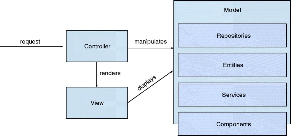

## MVC - Models</br> #### Key topics for tonight <div style="text-align: left;"> - Responsibilities of the Model </br> - Models in ASP.NET Core MVC </br> - Putting it all together - MVC Example projects </br> </div> --- ## Models Represents all of the application logic including business logic, validation logic, and data access logic. --- ## Models (cont) <div style="text-align: left;"> In <span style="color: cadetblue">smaller</span> MVC Applications, the Models can often simply be found inside a folder titled `Models`, much like what we've seen for our Controllers and Views. Within <span style="color: cadetblue">larger</span> applications, our Models can sometimes be reorganized such that we split our `getting` and `setting` responsibilities out of a Model class, and into various other `application layers`. </div> --- ## Models (cont) #### Best practices - We should strive to have larger models rather than larger controllers. - We should be careful not to squeeze too much functionality into individual classes. (Single Responsibility Principle) - Take your time when planning your Model. Think about "what do I need my application to do?" and plan accordingly. --- ## Models (cont) #### Vocab <div style="text-align: left; font-size: 2.25rem;"> - <span style="color: cadetblue">Model</span> - Represents all of the application logic including business logic, validation logic, and data access logic. - <span style="color: cadetblue">ViewModel</span> - Represents data as it is rendered in the view. - <span style="color: cadetblue">DTO</span> (Data Transfer Object) - an object that carries data between processes (different parts of the codebase). - <span style="color: cadetblue">POCO</span> (Plain Old C# Object) - an object that doesn't extend / implement any other classes or rely on other framework. A simple class. </div> --- ## Models (cont) #### Syntax of a ViewModel - smaller example ```cs public class PersonViewModel { public string FirstName { get; set; } public string LastName { get; set; } public int Age { get; set; } public string FullName => $"{FirstName} {LastName}"; } ``` ```cs public IActionResult Index() { return View(new PersonViewModel() { FirstName = "Ryan", LastName = "Shaw", Age = 27 }); } ``` --- ## Models (cont) #### Syntax of a ViewModel (cont) ```cshtml @model LaunchCodeMVCApp.Models.PersonViewModel @{ ViewData["Title"] = "Index"; } <h2>Hello @Model.FullName</h2> <p>You're @Model.Age years old!</p> ``` --- ## Model-Binding Model binding allows for data to be passed from our views into our controllers via `classes`, rather than individual primative data types. This is particularly useful when working with large forms and other complicated sets of data. --- ## Model-Binding (cont) #### Code Example - view ```cshtml <h1>Add Person</h1> <form method="post"> <div class="form-group"> <label for="FirstName">First Name</label> <input name="FirstName" type="text" /> </div> <div class="form-group"> <label for="LastName">Last Name</label> <input name="LastName" type="text" /> </div> <div class="form-group"> <label for="Age">Age</label> <input name="Age" type="text" /> </div> <input type="submit" value="Add Person" /> </form> ``` --- ## Model-Binding (cont) #### Code Example - Controller ```c# public IActionResult Index(PersonViewModel? person = null) { return View(person.FirstName == null ? new PersonViewModel() { FirstName = "Barack", LastName = "Obama", Age = 60 } : person); } [HttpPost] [Route("HelloWorld")] public IActionResult NewPerson(PersonViewModel newPerson) { if (newPerson.FirstName == "Ryan") throw new Exception("NO RYANS ALLOWED!"); return View("Index", newPerson); } ``` --- ## Models (cont) #### Models in Larger Systems  <div class="fragment"> Don't panic! We will get into these patterns in more detail later. </div> --- ## Models (cont) #### Large project demo - prerequisites - Install [Docker for Windows](https://docs.docker.com/desktop/windows/install/). - Ensure you have "Container development tools" enabled via visual studio installer (as well as `.Net Core cross-platform development` workload). - `git clone` this [repository](https://github.com/dotnet-architecture/eShopOnWeb) on your local computer. --- ## Model - Large Project Demo #### Areas to explore - CatalogViewModelService - BasketViewModelService.GetOrCreateBacketForUser() - BasketService.AddItemToBacket() --- ## Models - Concept Check! 1) What sort of questions should you be considering when choosing to put your code in the controller versus the model? 2) Why might I choose to use model-binding in my application? 3) What should typically happen to our model as our application grows? - What are some of the potential risks of growing our model incorrectly? --- ## Exercises [Link](https://education.launchcode.org/csharp-web-development/chapters/aspdotnet-model-classes/exercises.html) --- ## Questions --- # Studio [Link](https://education.launchcode.org/csharp-web-development/chapters/aspdotnet-model-classes/studio.html)